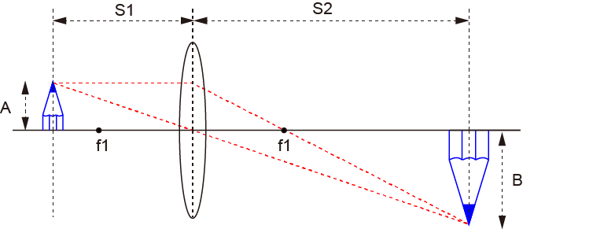
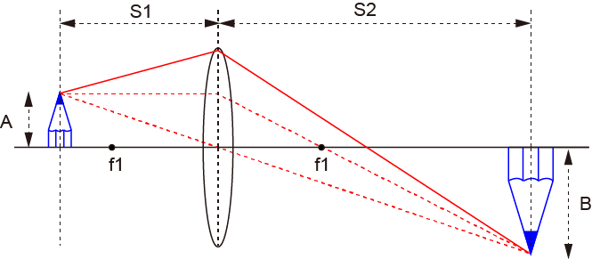
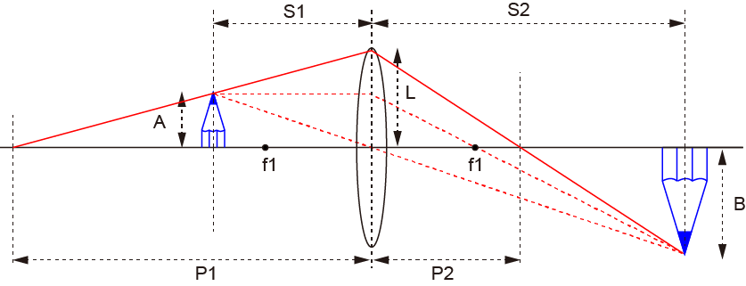

結像-平行光，中心を通る光以外は？
ここ，で述べたように，基本的な結像原理は以下の通りです．．

基本的には，
サンプルからレンズに平行な光線
サンプルからレンズの中心を通る光線
をもとに考えられてきました．
では，
サンプルから平行でも中心を通るわけでもない光線は？
どうなのでしょう？

上図の赤実線が赤点線の交点に交わるかですね．
では，ここで，赤い線を左に延ばしてみましょう．

すると，レンズの公式から，
\(\Large \frac{1}{P1} + \frac{1}{P2} = \frac{1}{f1} \)
が成り立ちます．それ以外にも，
\(\Large \frac{1}{S1} + \frac{1}{S2} = \frac{1}{f1} \)
\(\Large \frac{A}{P1-S1} = \frac{L}{P1} \)
\(\Large \frac{A}{S1} = \frac{B}{S2} \)
が成り立ちます．
問題は，この赤線がS2の位置での高さがBとなればいいのです．
S2の位置での高さを，x，とすると，
\(\Large \frac{x}{S2-P2} = \frac{L}{P2} \)
を解いて，x=B，となればいいのです．
Lを消去して，
\(\Large \frac{x}{S2-P2} = \frac{1}{P2} \frac{A \cdot P1}{P1-S1} \)
\(\Large \begin{align*} x &= \frac{S2-P2}{P1-S1} \frac{A \cdot P1}{P2} \\
&= \frac{S2-P2}{P1-S1} \frac{P1}{P2} \frac{S1}{S2} B \\
&= \frac{\frac{1}{P2}-\frac{1}{S2}}{\frac{1}{S1}-\frac{1}{P1}} B \end{align*} \)
となります．
二つのレンズの公式から，
\(\Large \frac{1}{S1} + \frac{1}{S2} = \frac{1}{P1} + \frac{1}{P2} \)
\(\Large \frac{1}{S2} - \frac{1}{P2} = \frac{1}{P1} - \frac{1}{S1} \)
となるので，先ほどの式の最初の分母が１となります．
従って，
\(\Large x = B \)
となり，無事，赤線が赤点線の交点と交わりました．
つまり，レンズのどの位置を通っても結像する位置は等しい，のです．